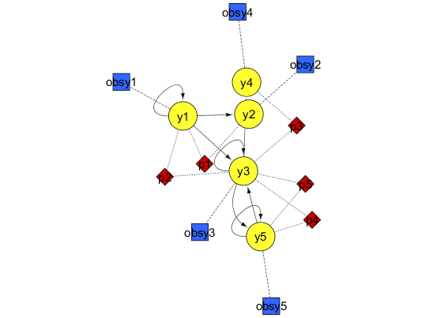
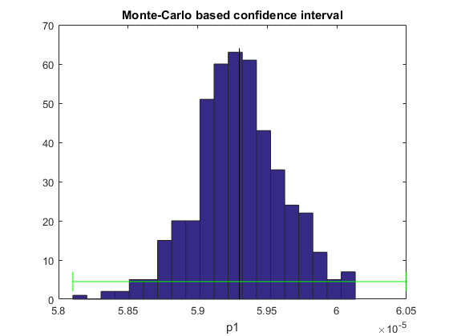
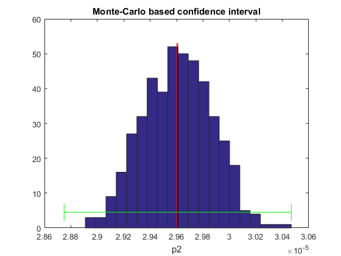
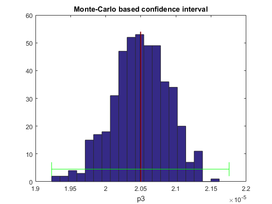
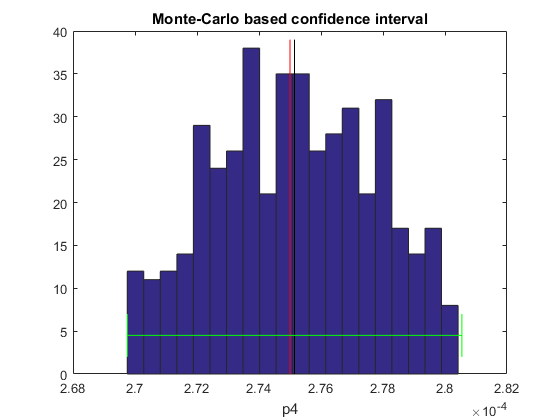
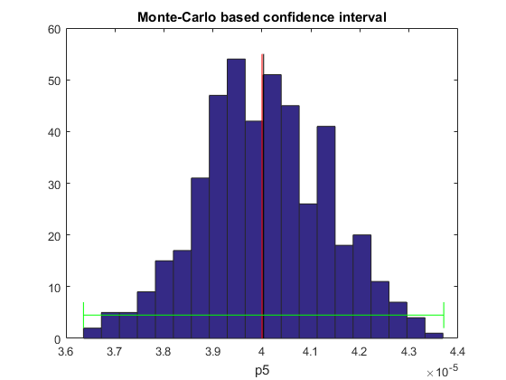
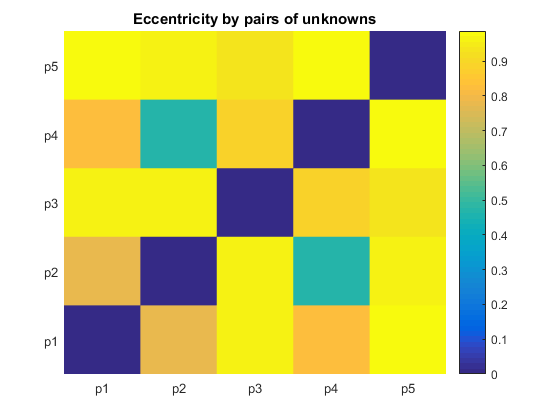

AMIGO_RIdent
Contents
Task description
- Computes robust confidence intervals by means of a Monte-Carlo sampling approach. The optimal value found in PE is used as a reference to generate
hundreds (500, by default) of data realizations. The parameter estimation problem is then solved for all the realizations. Results are analysed to provide
information about practical identifiability (confidence and correlation).
Call AMIGO_RIdent from command line
It is recommended to keep all inputs in a 'problem_file'.m. ContourP task can then be called in two different ways:
1. Using the inputs structure:
> problem_file
> AMIGO_RIdent(inputs)
2. Using the input file:
> AMIGO_RIdent('problem_file') > AMIGO_RIdent('problem_file','run_ident')Example
TITLE: Thermal isomerization of alfa-pinene

clear; %============================ % RESULTS PATHS RELATED DATA %============================ inputs.pathd.results_folder='alpha_pinene';% Folder to keep results (in Results) for a given problem inputs.pathd.short_name='pinene'; % To identify figures and reports for a given problem inputs.pathd.runident='r1'; % [] Identifier used in order not to overwrite previous % results. May be modified from command line.'run1'(default) %============================ % MODEL RELATED DATA %============================ inputs.model.input_model_type='charmodelC'; % Model introduction: 'charmodelC'|'c_model'|'charmodelM'| % 'matlabmodel'|'sbmlmodel'|'blackboxmodel'|'blackboxcost inputs.model.n_st=5; % Number of states inputs.model.n_par=5; % Number of model parameters inputs.model.n_stimulus=0; % Number of inputs, stimuli or control variables inputs.model.names_type='custom'; % [] Names given to states/pars/inputs: 'standard' % 'custom'(default) inputs.model.st_names=char('y1','y2','y3','y4','y5'); % Names of the states inputs.model.par_names=char('p1','p2','p3','p4','p5'); % Names of the parameters inputs.model.stimulus_names=[]; % Names of the stimuli, inputs or controls inputs.model.eqns=... % Equations describing system dynamics. char('dy1=-(p1+p2)*y1',... % Time derivatives are regarded 'd'st_name'' 'dy2= p1*y1',... 'dy3= p2*y1-(p3+p4)*y3+p5*y5',... 'dy4= p3*y3',... 'dy5= p4*y3-p5*y5'); p1=5.93e-5; p2=2.96e-5; p3=2.05e-5; p4=27.5e-5; p5=4e-5; inputs.model.par=[p1 p2 p3 p4 p5]; % Nominal value for the parameters % These values may be updated during optimization %================================== % EXPERIMENTAL SCHEME RELATED DATA %================================== inputs.exps.n_exp=1; % Number of experiments inputs.exps.n_obs{1}=5; % Number of observed quantities per experiment inputs.exps.obs_names{1}=char('obsy1','obsy2','obsy3','obsy4','obsy5'); % Observables inputs.exps.obs{1}=char('obsy1=y1','obsy2=y2','obsy3=y3','obsy4=y4','obsy5=y5'); % Observation function inputs.exps.exp_y0{1}=[100 0 0 0 0]; % Initial conditions for each experiment inputs.exps.t_f{1}=36420; % Experiments duration inputs.exps.n_s{1}=9; % Number of sampling times inputs.exps.t_s{1}=[0 1230 3060 4920 7800 10680 15030 22620 36420]; % Sampling times %================================== % EXPERIMENTAL DATA RELATED INFO %================================== inputs.exps.data_type='real'; % Type of data: 'pseudo'|'real' inputs.exps.exp_data{1}=[ 100.0 0.0 0.0 0.0 0.0 88.35 7.3 2.3 0.4 1.75 76.4 15.6 4.5 0.7 2.8 65.1 23.1 5.3 1.1 5.8 50.4 32.9 6.0 1.5 9.3 37.5 42.7 6.0 1.9 12.0 25.9 49.1 5.9 2.2 17.0 14.0 57.4 5.1 2.6 21.0 4.5 63.1 3.8 2.9 25.7 ]; % Experimental data inputs.exps.error_data{1}=inputs.exps.exp_data{1}.*0.01; % Experimental noise (1%) %================================== % UNKNOWNS RELATED DATA %==================================
Select the parameters to be considered by ContourP
inputs.PEsol.id_global_theta='all'; % 'all'|User selected
In order to use AMIGO_ContourP you need to specify upper and lower bounds on the parameters as well as an initial guess
inputs.PEsol.global_theta_max=[1 1 1 1 1]; % Maximum allowed values for the paramters inputs.PEsol.global_theta_min= [0 0 0 0 0]; % Minimum allowed values for the paramters inputs.PEsol.global_theta_guess = inputs.model.par; % Any parameter values can be introduced here %================================== % NUMERICAL METHDOS RELATED DATA %================================== % SIMULATION % Default for charmodel C: CVODES % OPTIMIZATION inputs.nlpsol.nlpsolver='ess'; % The problem will be solved with eSS inputs.nlpsol.eSS.maxtime=100; % Maximum allowed time in s for eSS inputs.nlpsol.eSS.local.solver='lsqnonlin'; % Local solver in eSS % NUMBER OF SAMPLES IN RIdent inputs.rid.conf_ntrials=500; % Suggested >=500
More information regarding the inputs used in this example can be found here.
%================================ % CALL AMIGO2 from COMMAND LINE %================================ % It is recommended to keep all inputs in a 'problem_file'.m. % AMIGO2 RIdent task can be called as follows: % AMIGO_RIdent('problem_file','run_ident') or AMIGO_ContourP(inputs) AMIGO_Prep(inputs); AMIGO_RIdent(inputs);
***********************************
AMIGO2, Copyright @CSIC
AMIGO2_R2016a [Oct 2015]
***********************************
*Date: 14-Dec-2015
------>Pre processing....this may take a few seconds.
------>Checking inputs....
------> WARNING message
AMIGO_check_model: You did not specify inputs.model.exe_type, standard will be assumed
------> Generating C code ...
------> Mexing files....
Building with 'MinGW64 Compiler (C)'.
D:\AMIGO2_REPO_2014\AMIGO2R2016\Kernel\IVP_solvers\cvodes\C_src4Amigo\src\src_amigo\simulate_amigo_model.c: In function 'simulate_amigo_model':
D:\AMIGO2_REPO_2014\AMIGO2R2016\Kernel\IVP_solvers\cvodes\C_src4Amigo\src\src_amigo\simulate_amigo_model.c:330:16: warning: passing argument 1 of 'mexPrintf' from incompatible pointer type
mexPrintf(stderr,"\nSolver failed at flag = CVode(cvode_mem, tout, y, &t, CV_TSTOP_RETURN);. . .\n");
^
In file included from D:\AMIGO2_REPO_2014\AMIGO2R2016\Kernel\IVP_solvers\cvodes\C_src4Amigo\include\include_amigo/simulate_amigo_model.h:4:0,
from D:\AMIGO2_REPO_2014\AMIGO2R2016\Kernel\IVP_solvers\cvodes\C_src4Amigo\src\src_amigo\simulate_amigo_model.c:1:
C:\MATLAB_R2015b_64/extern/include/mex.h:202:27: note: expected 'const char *' but argument is of type 'struct FILE *'
LIBMWMEX_API_EXTERN_C int mexPrintf(
^
D:\AMIGO2_REPO_2014\AMIGO2R2016\Kernel\IVP_solvers\cvodes\C_src4Amigo\src\src_interface\interface_with_matlab.c: In function 'mexFunction':
D:\AMIGO2_REPO_2014\AMIGO2R2016\Kernel\IVP_solvers\cvodes\C_src4Amigo\src\src_interface\interface_with_matlab.c:200:17: warning: assignment from incompatible pointer type
stats_struct = mxGetPr(plhs[5]);
^
MEX completed successfully.
------>Files generated....
***********************************
AMIGO2, Copyright @CSIC
AMIGO2_R2016a [Oct 2015]
***********************************
*Date: 14-Dec-2015
------>Checking inputs....
------> WARNING message
AMIGO_check_model: You did not specify inputs.model.exe_type, standard will be assumed
------>IMPORTANT!!: SSm has been selected as the default solver to compute robust
confidence regions. SSm default options have been assigned
in the ssm_options and ssm_options_conf files.
You may need to modify those settings for your particular problem,
particulary:
- maximum number of function evaluations /iterations,
- maximum computational time
>>>>> GENERATION OF ROBUST CONFIDENCE REGIONS
>>>>> TRIAL 1
------------------------------------------------------------------------------
eSS R2010B - Enhanced Scatter Search
<c> IIM-CSIC, Vigo, Spain - email: gingproc@iim.csic.es
------------------------------------------------------------------------------
Refset size automatically calculated: 8
Number of diverse solutions automatically calculated: 50
-----------------------------------------------
Initial value problem related active settings
-----------------------------------------------
ivpsolver: cvodes
RelTol: 1e-05
AbsTol: 1e-07
MaxStepSize: Inf
MaxNumberOfSteps: 100000
Initial Pop: NFunEvals: 56 Bestf: 19.8807 CPUTime: 0.140401 Var: 3.36996e+08
Iteration: 1 NFunEvals: 123 Bestf: 19.8807 CPUTime: 0.265202 Var: 2.21317e+08
Call local solver: LSQNONLIN
Initial point function value: 19.880733
Local solution function value: 19.8724
Number of function evaluations in the local search: 25
CPU Time of the local search: 0.061895 seconds
Iteration: 2 NFunEvals: 219 Bestf: 19.8724 CPUTime: 0.468003 Var: 2.19563e+08
Iteration: 3 NFunEvals: 280 Bestf: 19.8724 CPUTime: 0.561604 Var: 2.0975e+08
Iteration: 4 NFunEvals: 341 Bestf: 19.8724 CPUTime: 0.655204 Var: 1.95748e+08
Iteration: 5 NFunEvals: 401 Bestf: 19.8724 CPUTime: 0.748805 Var: 1.9407e+08
Iteration: 6 NFunEvals: 463 Bestf: 19.8724 CPUTime: 0.842405 Var: 1.75094e+08
Iteration: 7 NFunEvals: 525 Bestf: 19.8724 CPUTime: 0.936006 Var: 1.62726e+08
Iteration: 8 NFunEvals: 592 Bestf: 19.8724 CPUTime: 1.045207 Var: 1.53413e+08
Iteration: 9 NFunEvals: 657 Bestf: 19.8724 CPUTime: 1.138807 Var: 1.5254e+08
Iteration: 10 NFunEvals: 719 Bestf: 19.8724 CPUTime: 1.232408 Var: 1.52115e+08
Iteration: 11 NFunEvals: 781 Bestf: 19.8724 CPUTime: 1.326009 Var: 1.51764e+08
Call local solver: LSQNONLIN
Initial point function value: 31327.963246
Local solution function value: 31262.5
Number of function evaluations in the local search: 97
CPU Time of the local search: 0.251743 seconds
Iteration: 12 NFunEvals: 948 Bestf: 19.8724 CPUTime: 1.762811 Var: 1.51587e+08
Iteration: 13 NFunEvals: 1013 Bestf: 19.8724 CPUTime: 1.903212 Var: 1.51486e+08
Final local refinement with: LSQNONLIN
Initial point function value: 19.872437
Local solution function value: 19.872437
Number of function evaluations in the local search: 13
CPU Time of the local search: 0.030065 seconds
Maximum number of function evaluations achieved
Best solution value 19.8724
Decision vector
5.92585e-05
2.96342e-05
2.04724e-05
0.000274463
3.99779e-05
CPU time 1.93441
Number of function evaluations 1027
------------------------------------------------------------------------------
Refset size automatically calculated: 8
Number of diverse solutions automatically calculated: 50
Initial Pop: NFunEvals: 56 Bestf: 4.64413 CPUTime: 0.109201 Var: 2.75609e+08
Iteration: 1 NFunEvals: 127 Bestf: 4.64413 CPUTime: 0.218401 Var: 2.27933e+08
Call local solver: LSQNONLIN
Initial point function value: 4.644132
Local solution function value: 4.06812
Number of function evaluations in the local search: 25
CPU Time of the local search: 0.051401 seconds
Iteration: 2 NFunEvals: 217 Bestf: 4.06812 CPUTime: 0.374402 Var: 2.20678e+08
Iteration: 3 NFunEvals: 278 Bestf: 4.06812 CPUTime: 0.468003 Var: 2.20752e+08
Iteration: 4 NFunEvals: 337 Bestf: 4.06812 CPUTime: 0.561604 Var: 2.21356e+08
Iteration: 5 NFunEvals: 396 Bestf: 4.06812 CPUTime: 0.639604 Var: 2.21456e+08
Iteration: 6 NFunEvals: 455 Bestf: 4.06812 CPUTime: 0.842405 Var: 2.21596e+08
Iteration: 7 NFunEvals: 513 Bestf: 4.06812 CPUTime: 0.936006 Var: 2.21595e+08
Iteration: 8 NFunEvals: 569 Bestf: 4.06812 CPUTime: 1.014006 Var: 2.21595e+08
Iteration: 9 NFunEvals: 625 Bestf: 4.06812 CPUTime: 1.107607 Var: 2.21595e+08
Iteration: 10 NFunEvals: 682 Bestf: 4.06812 CPUTime: 1.201208 Var: 2.1185e+08
Iteration: 11 NFunEvals: 744 Bestf: 4.06812 CPUTime: 1.310408 Var: 2.00011e+08
Call local solver: LSQNONLIN
Initial point function value: 33318.646811
Local solution function value: 33312.8
Number of function evaluations in the local search: 55
CPU Time of the local search: 0.153799 seconds
Iteration: 12 NFunEvals: 862 Bestf: 4.06812 CPUTime: 1.560010 Var: 1.98157e+08
Iteration: 13 NFunEvals: 920 Bestf: 4.06812 CPUTime: 1.638010 Var: 1.94027e+08
Iteration: 14 NFunEvals: 987 Bestf: 4.06812 CPUTime: 1.747211 Var: 1.94086e+08
Iteration: 15 NFunEvals: 1054 Bestf: 4.06812 CPUTime: 1.856412 Var: 1.80927e+08
Final local refinement with: LSQNONLIN
Initial point function value: 4.068122
Local solution function value: 4.068122
Number of function evaluations in the local search: 13
CPU Time of the local search: 0.029957 seconds
Maximum number of function evaluations achieved
Best solution value 4.06812
Decision vector
5.89724e-05
2.99243e-05
2.10931e-05
0.000273889
4.09828e-05
CPU time 1.88761
Number of function evaluations 1068
.....
intermediate outputs deleted
.....
TRIAL 500
------------------------------------------------------------------------------
eSS R2010B - Enhanced Scatter Search
IIM-CSIC, Vigo, Spain - email: gingproc@iim.csic.es
------------------------------------------------------------------------------
Refset size automatically calculated: 8
Number of diverse solutions automatically calculated: 50
Initial Pop: NFunEvals: 56 Bestf: 5.81075 CPUTime: 0.109201 Var: 5.0798e+08
Iteration: 1 NFunEvals: 123 Bestf: 5.81075 CPUTime: 0.218401 Var: 2.41172e+08
Call local solver: LSQNONLIN
Initial point function value: 5.810749
Local solution function value: 5.72119
Number of function evaluations in the local search: 25
CPU Time of the local search: 0.051557 seconds
Iteration: 2 NFunEvals: 215 Bestf: 5.72119 CPUTime: 0.374402 Var: 4.02487e+08
Iteration: 3 NFunEvals: 283 Bestf: 5.72119 CPUTime: 0.483603 Var: 3.90835e+08
Iteration: 4 NFunEvals: 346 Bestf: 5.72119 CPUTime: 0.577204 Var: 3.7157e+08
Iteration: 5 NFunEvals: 407 Bestf: 5.72119 CPUTime: 0.670804 Var: 3.34952e+08
Iteration: 6 NFunEvals: 476 Bestf: 5.72119 CPUTime: 0.780005 Var: 3.11701e+08
Iteration: 7 NFunEvals: 538 Bestf: 5.72119 CPUTime: 0.873606 Var: 3.09837e+08
Iteration: 8 NFunEvals: 596 Bestf: 5.72119 CPUTime: 1.544410 Var: 3.08313e+08
Iteration: 9 NFunEvals: 661 Bestf: 5.72119 CPUTime: 1.669211 Var: 3.06866e+08
Iteration: 10 NFunEvals: 720 Bestf: 5.72119 CPUTime: 2.028013 Var: 3.06544e+08
Iteration: 11 NFunEvals: 778 Bestf: 5.72119 CPUTime: 2.277615 Var: 2.86581e+08
Call local solver: LSQNONLIN
Initial point function value: 32118.916892
Local solution function value: 31968.5
Number of function evaluations in the local search: 91
CPU Time of the local search: 0.237413 seconds
Iteration: 12 NFunEvals: 927 Bestf: 5.72119 CPUTime: 2.698817 Var: 2.71873e+08
Iteration: 13 NFunEvals: 985 Bestf: 5.72119 CPUTime: 3.042020 Var: 2.71234e+08
Iteration: 14 NFunEvals: 1045 Bestf: 5.72119 CPUTime: 3.868825 Var: 2.40512e+08
Final local refinement with: LSQNONLIN
Initial point function value: 5.721194
Local solution function value: 5.721194
Number of function evaluations in the local search: 19
CPU Time of the local search: 0.045838 seconds
Maximum number of function evaluations achieved
Best solution value 5.72119
Decision vector
5.88252e-05
2.93584e-05
2.03268e-05
0.000275359
3.92578e-05
CPU time 3.94683
Number of function evaluations 1065
Mean value and confidence interval using the hyper-ellipsoid:
Estimated global parameters:
p1 : 5.9299e-05 +- 1.1964e-06 (2.0176e+00 percent);
p2 : 2.9608e-05 +- 8.5981e-07 (2.9039e+00 percent);
p3 : 2.0493e-05 +- 1.2632e-06 (6.1640e+00 percent);
p4 : 2.7515e-04 +- 5.3974e-06 (1.9617e+00 percent);
p5 : 4.0032e-05 +- 3.6747e-06 (9.1795e+00 percent);
Distance from mean to theta*:
lambda(p1) : 9.3658e-10;
lambda(p2) : 8.4585e-09;
lambda(p3) : 6.7315e-09;
lambda(p4) : 1.4658e-07;
lambda(p5) : 3.1973e-08;
Total distance, lambda_total = 0.000000
Confidende hyper-ellipsoid orientation and eccentricity:
Maximum angle: 118.5200
Minimum angle: 8.3169
Mean angle: 83.7906
Maximum eccentricity: 0.9864
Minimum eccentricity: 0.4697
Mean eccentricity: 0.8938
Confidence hyper-ellipsoid pseudo-volume: 6.757707e-06
Monte Carlo-based correlation_mat=[
1.000 0.040 -0.273 -0.133 -0.172
0.040 1.000 0.706 -0.104 0.408
-0.273 0.706 1.000 0.235 0.710
-0.133 -0.104 0.235 1.000 0.693
-0.172 0.408 0.710 0.693 1.000
];
Eccentricity based correlation_mat=[
0.000 0.786 0.963 0.823 0.986
0.786 0.000 0.957 0.470 0.970
0.963 0.957 0.000 0.886 0.938
0.823 0.470 0.886 0.000 0.980
0.986 0.970 0.938 0.980 0.000
];D:\AMIGO2_REPO_2014\AMIGO2R2016\Kernel\OPT_solvers\eSS\local_solvers\n2fb\objf_dn2fb.m
<strong>
------>Results (report and struct_results.mat) and plots were kept in the directory:
</strong><strong>D:\AMIGO2_REPO_2014\AMIGO2R2016\Results\alpha_pinene\RIdent_pinene_ess_r1</strong>
Click <a href="matlab: cd('D:\AMIGO2_REPO_2014\AMIGO2R2016\Results\alpha_pinene\RIdent_pinene_ess_r1')">here</a> to go to the results folder or <a href="matlab: load('D:\AMIGO2_REPO_2014\AMIGO2R2016\Results\alpha_pinene\RIdent_pinene_ess_r1\strreport_pinene_r1.mat')">here</a> to load the results.
      See also
References
Model was taken from:
R.E. Fuguitt and J. E. Hawkins. Rate of thermal isomerization of alfa-pinene in the liquid phase. J. A. C. S. 1947, 69:461
RIdent approach is described in:
E Balsa-Canto, AA Alonso, JR Banga. An iterative identification procedure for dynamic modeling of biochemical networks. BMC Systems Biology 2010, 4 (1), 11.
AMIGO_htmldoc_inputs(inputs,fullfile(pwd,'html','ridentex1.html'));